My Interests
In my free time, I like playing video games with friends, trying new recipes at home, and listening to music when I want to relax.
Listening to Music
I listen to music when I want to relax or keep myself company while doing other things. What I play usually depends on my mood.
My Current Playlists
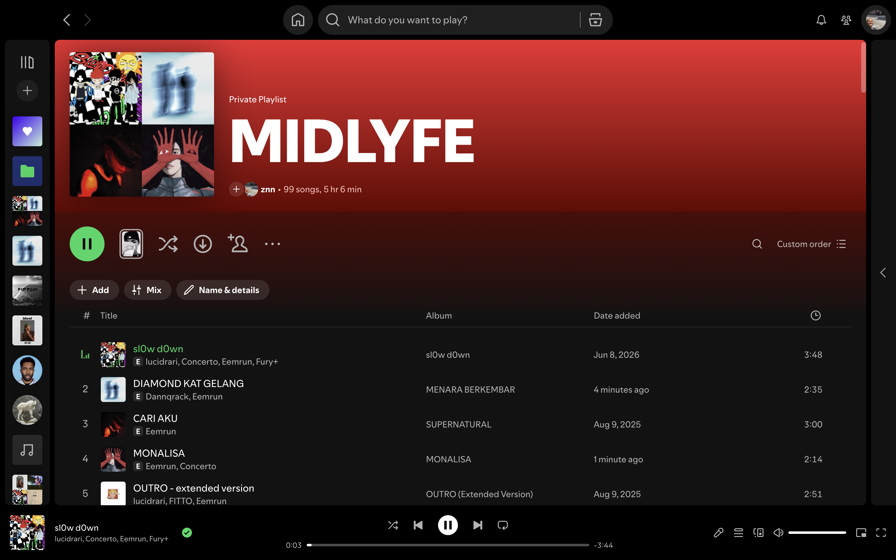
I named this playlist MIDLYFE because most of the songs are by artists from the Midlyfe label. I enjoy the sound and energy these Malaysian artists bring to hip-hop.
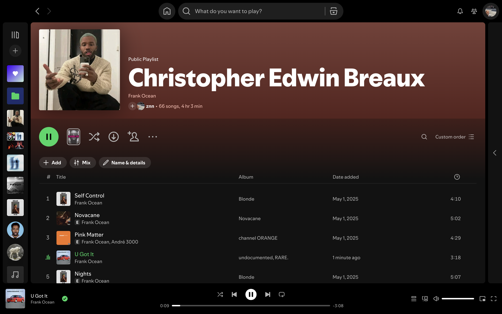
I named this playlist after Frank Ocean’s birth name, Christopher Edwin Breaux. It brings together his songs, including unreleased tracks, so I can enjoy more of his music in one place.
Favorite Artists
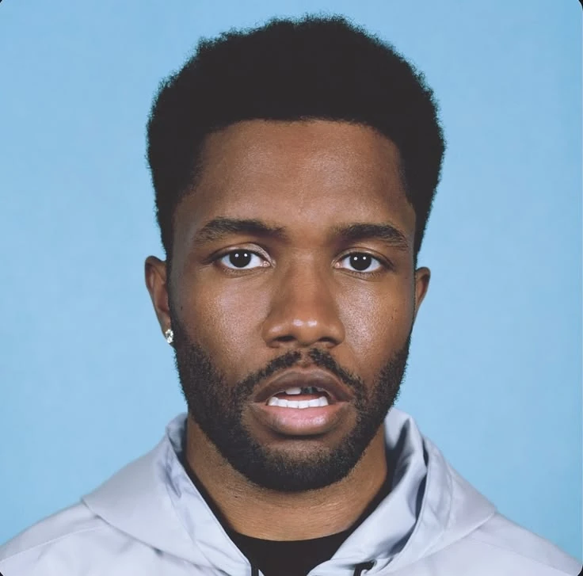
I connect with the emotions in his music. “Self Control” feels relatable, while “Nights” makes me want to tune out the noise and have a quiet moment.
I can relate to most of Drake’s songs, which is why his music feels personal to me. I admire how talented he is and how he brings together pop, R&B and rap.
I enjoy Justin Bieber’s music because I can connect with the emotions in his songs. His music reminds me to appreciate life and be grateful for what I have.
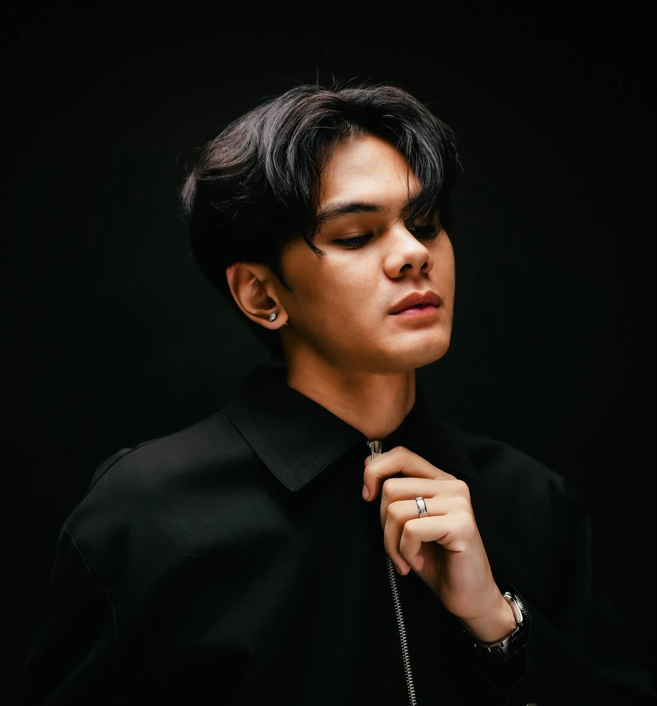
I enjoy lucidrari’s music, especially “OUTRO (Extended Version)” featuring Eemrun. It is one of the songs I like most from him and fits my love of hip-hop.
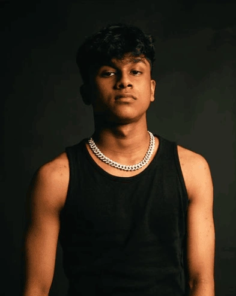
I enjoy what he brings to MENARA BERKEMBAR. Hearing his style alongside Dannqrack’s is one of the reasons I connect with the album.
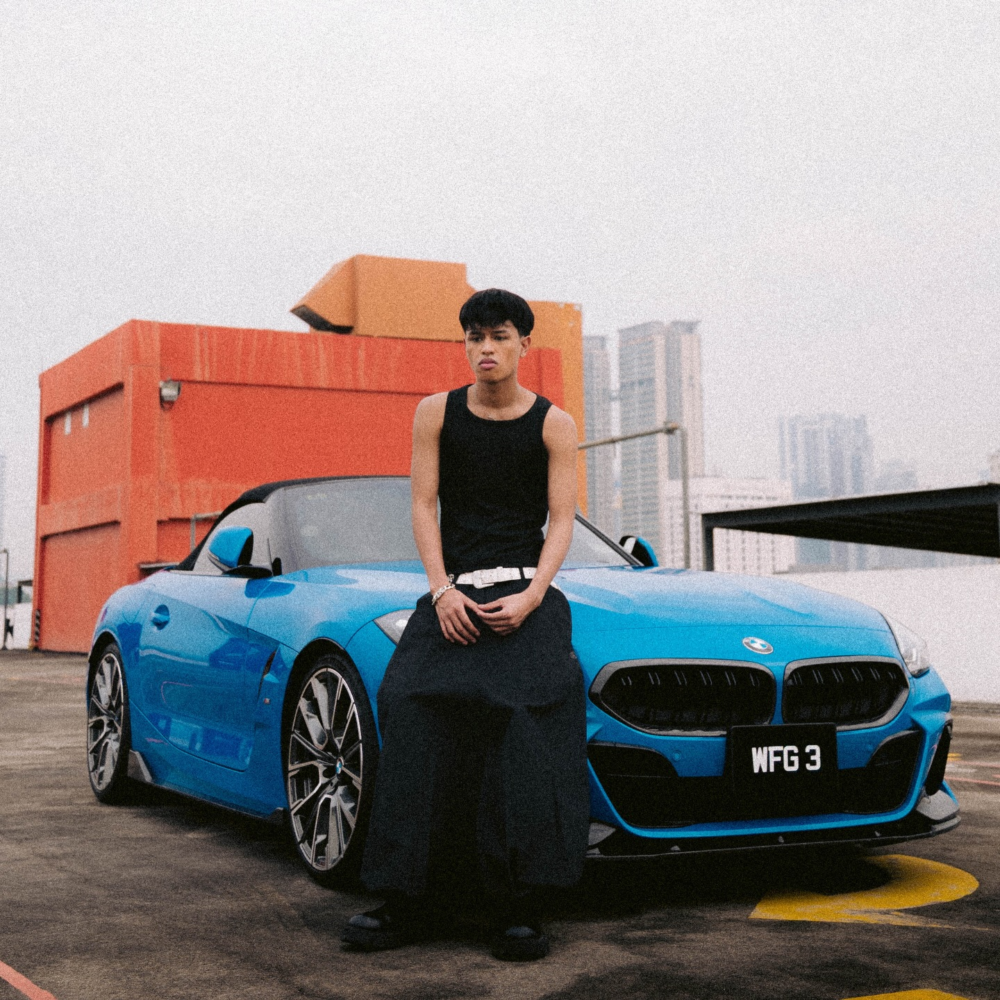
I like how he and Eemrun bring their styles together on MENARA BERKEMBAR. “DIAMOND KAT GELANG” and “JAUH” are two of my favorite songs from their album.
Favorite Albums
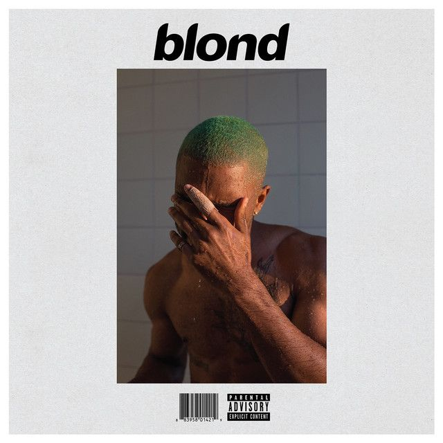
“Self Control” captures emotions I can relate to, while “Nights” makes me want to tune out the noise, stay quiet and let the music speak for a while.
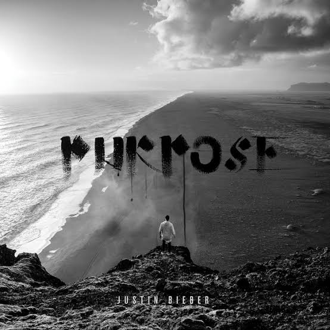
“Life Is Worth Living” reminds me to be grateful for life and appreciate what I have. I also relate to “Company” because it reflects how I feel about my situationship with someone.
I enjoy hip-hop, so MENARA BERKEMBAR is an album I connect with. I like how Dannqrack and Eemrun bring their own styles together on one album. My favorite songs are “DIAMOND KAT GELANG” and “JAUH.”
Playing Video Games
I enjoy playing video games in my free time. It’s a way for me to relax after a busy day, and I like the feeling of getting better at a game the more I play.
Games I Play
I always play FC 27 with my friends. Beating them is my favorite part.

I play horror games on Roblox with my friends. Getting scared together is half the fun.

I play GTA Online with my friends. I like teaming up and figuring out how to finish missions together.
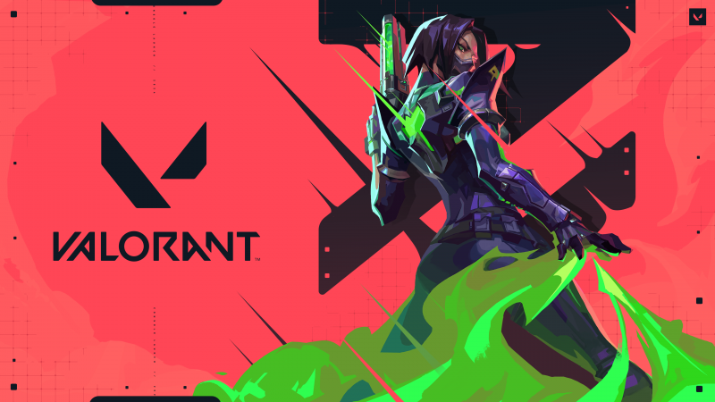
I’m still getting the hang of Valorant. My friends always carry me, haha.
Cooking
I enjoy making meals at home and trying different recipes. I like seeing how a dish turns out, especially when it’s something I’m making for the first time.
Dishes I’ve Made
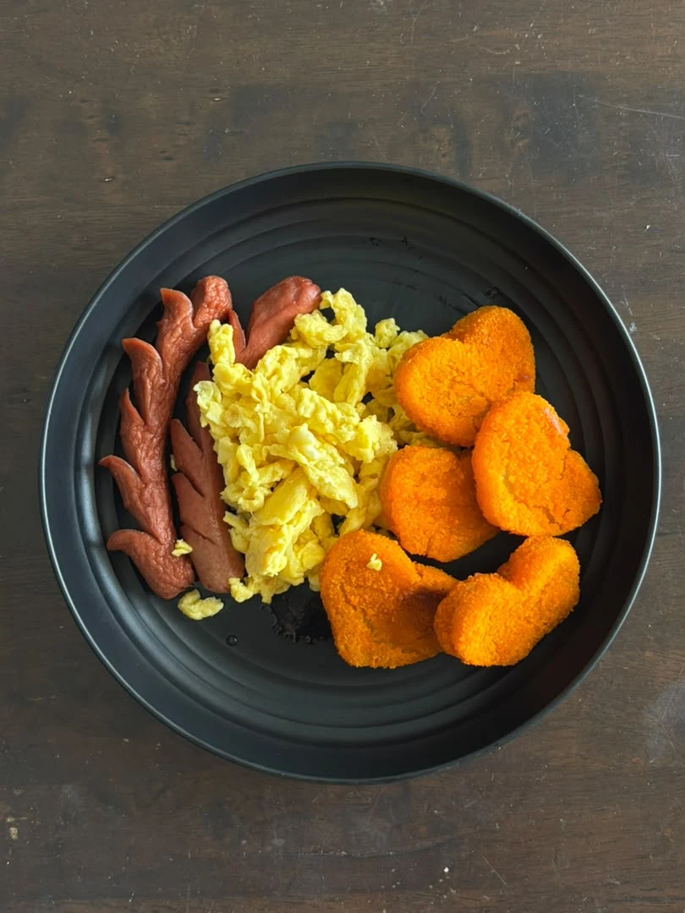
I made this for breakfast. Nothing fancy, just a quick plate to start the day.
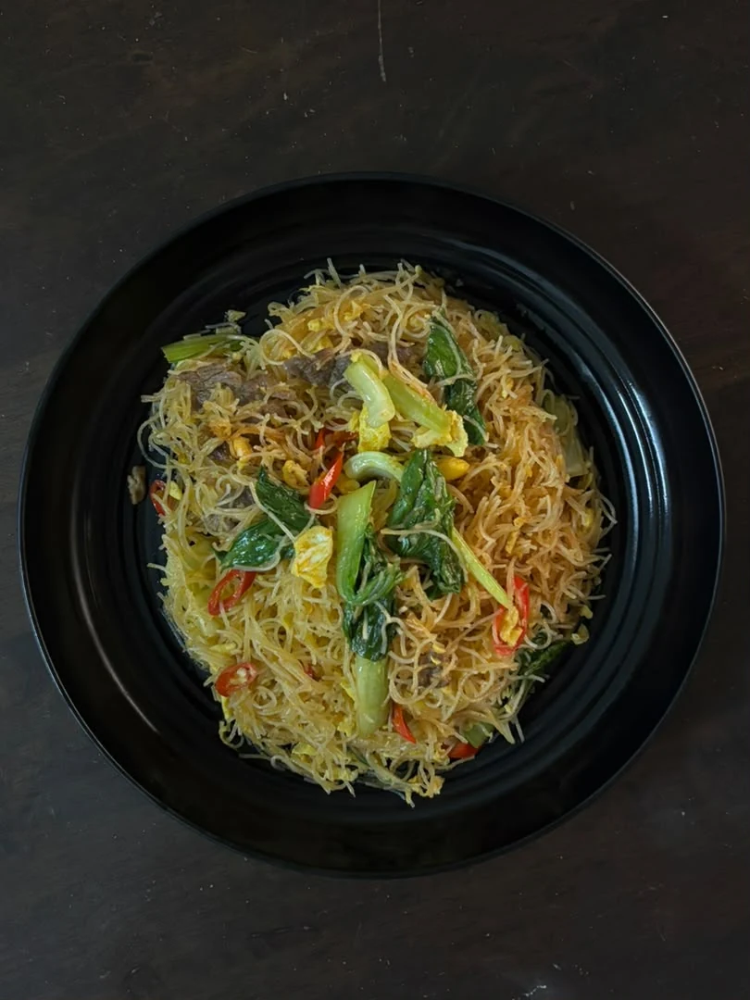
I cooked this for lunch with my friends. A plate of mee hun always goes well with a good chat.
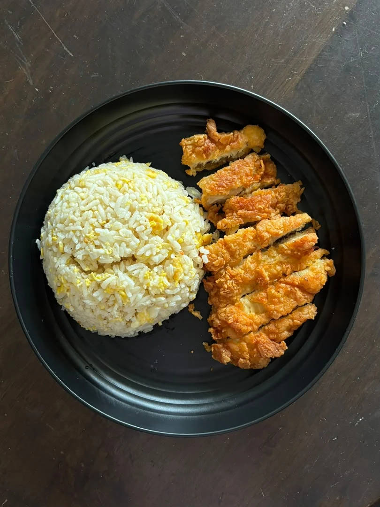
I made this for lunch when I felt like having something crispy. The chicken was my favourite part.
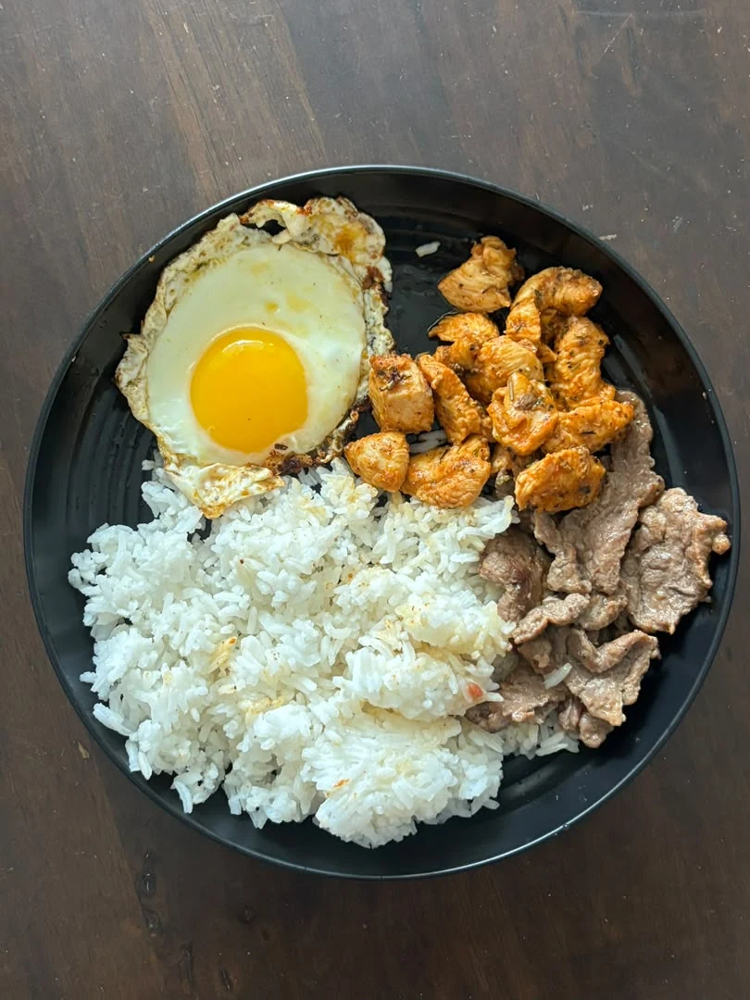
I cooked this for dinner with my friends after a long day. We wanted something simple and filling.
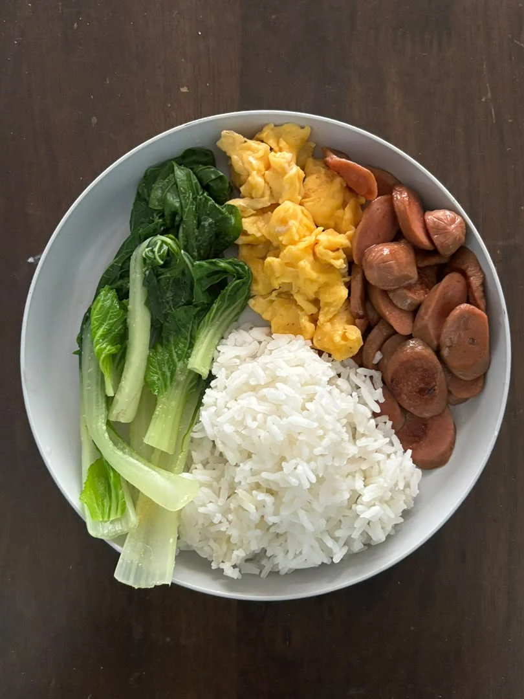
I put this together for a simple dinner at home. A little bit of everything on one plate.
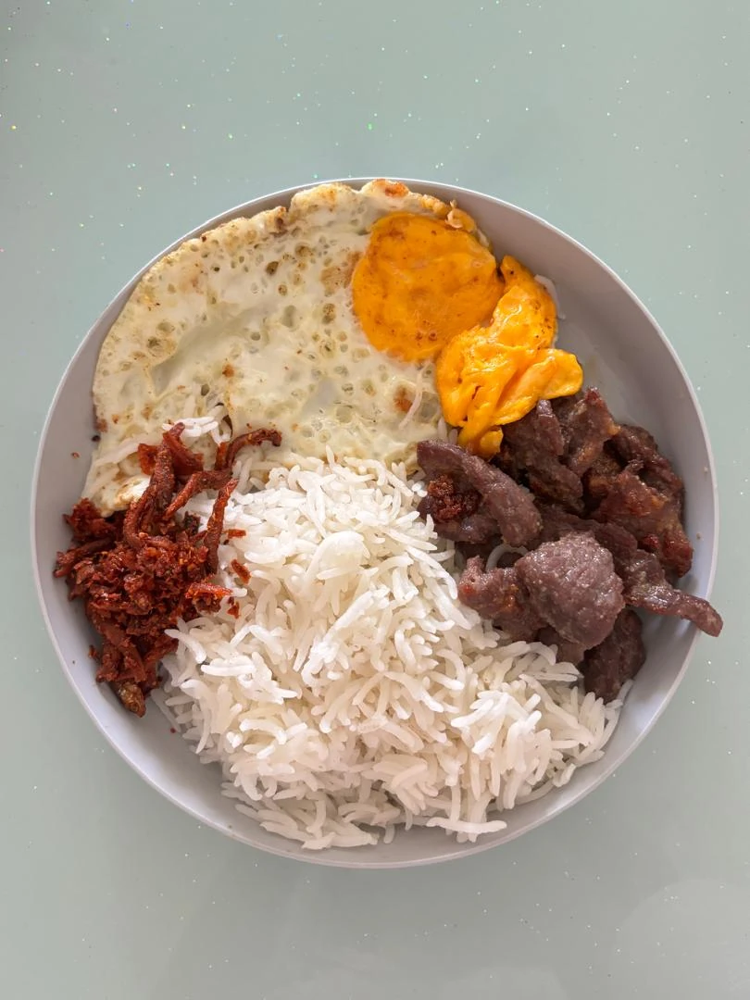
I made this for lunch. The dried fish adds a salty flavour that goes nicely with the rice and egg.